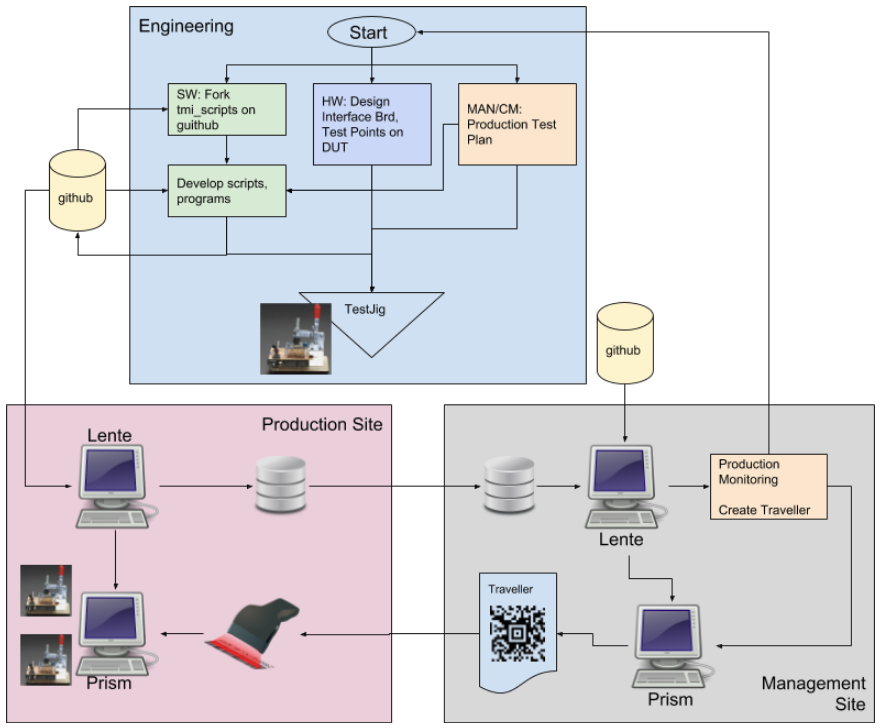
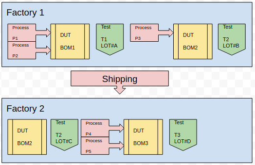
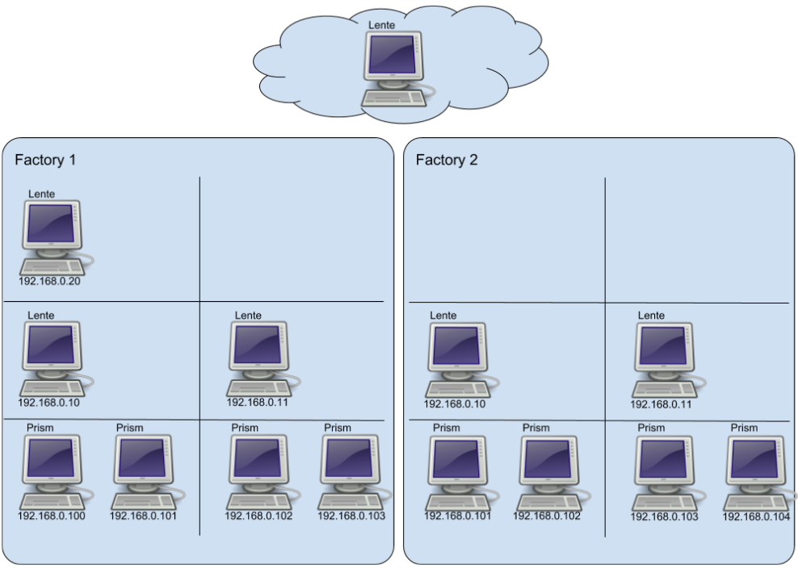

Production Planning¶
What follows is a general discussion of a production flow, and how Lente/Prism is configured for it.
Production Infrastructure Cycle¶

The above diagram presents a flow for developing and deploying scripts.
Git is used as a repository for development and releases. Your scripts repo is a fork of the Sistemi scripts repo on GitHub.
Lente script sync is used to deploy scripts to Prism stations. Each station receives a copy of the Lente public/prism folder (drivers and scripts), see Script Sync Exclusions. Stations get the scripts from Lente; Lente never connects to a station. Lente can sync stations automatically when the scripts version changes (auto_sync_scripts in settings.json), and the root Lente can git pull new scripts from the Station Manager page.
settings.json is not synced. Each Prism and Lente computer has its own copy, set up when the computer is installed, see Prism Computer Checklist.
Stages¶
Consider the following simplified production flow diagram,

There are two factories belonging to two different sub-contractors
The product is represented by
DUTFactory 1 does two process steps (P1 and P2) to create the first version of the DUT, called BOM1 (Bill of Materials)
The product is then tested, T1
Then process step P3 is done, creating DUT BOM2, and the product is tested again, T2
The DUT is shipped to the next factory, and the first thing that is done is a repeat of the (outgoing) test T2, this is so that any DUT material damaged in shipping is quantified before Factory 2 does any processing.
This re-testing is referred to as “incoming” inspection/test
This is often required so that damaged or faulty DUT can be quantified before more processing is done on the DUT
Responsibility for damaged or faulty product needs to be assigned to the right sub-contractor
The same T2 script runs in both factories. The location of the result tells the outgoing and incoming tests apart
Factory 2 does process steps P4 and P5, creating DUT BOM3, and the product is tested, T3
Each test in the diagram has its own lot (LOT#A to LOT#D). The lot is the work order of that stage, so the same units can have a different lot at each stage. The results of one unit are found together by its serial number (key0), not by its lot, see Traceability.
Planning Your Test Stages¶
Each test stage is a separate script, usually run on its own jig. How many stages you need depends on your process steps, not on Prism.
Add a test stage,
after a process step that is expensive to undo, so faults are found before more value is added. For example, test the PCBA before it is put in an enclosure.
where the parts that can be tested change. After assembly some test points can no longer be reached, and a Bed of Nails test must move to the connectors or to the DUT’s own interfaces.
when the product moves to another factory or sub-contractor (incoming test).
Fewer stages are cheaper to run and to maintain, as each stage needs a jig, a script, and operators.
A common plan for a PCBA in an enclosure has two stages,
Board Level Test (BLT), on a Bed of Nails jig, before assembly
check the power rails
program the bootloader or firmware
connect to the DUT, record its serial number, unique id and firmware version
write the hardware revision to the DUT, calibrate, and check the calibration
Final Assembly Test (FAT), after assembly, through the product’s connectors
connect to the DUT, check its serial number and firmware version
functional tests that need the full assembly
print the product label
Programming can be its own stage when programming takes much longer than testing, so that more programming jigs can feed one test jig.
Within a stage,
start with a setup item and end with a teardown item, and keep the teardown enabled. The last item of the script is the teardown, Prism runs it after a fail, a timeout or an abort, see Timeouts and Aborts.
keep
fail_faston, unless the tests are independent of each other.order the tests so the cheapest and most likely failures come first. For example check the power rails before programming.
put the limits in the script, on each item, so they can be changed without changing code, see Script Design.
one test item method can be used by several items, for example a voltage check for each rail, with the rail name and limits in each item,
{"id": "BLT100_voltage", "enable": true, "name": "V3V3", "min": 3200, "max": 3400 }, {"id": "BLT100_voltage", "enable": true, "name": "V1V8", "min": 1725, "max": 1875 },
Both items have the same item name,
BLT100_voltage, so the measurement name is built from the rail name to keep the two measurements apart.each program has all of its test items, there is no shared module of test items between stages or products. Pure helper functions (a checksum, a DUT protocol) can be in their own module, see Keep the program simple.
To decide what a Bed of Nails stage must test, and which test points the board needs, do a test coverage analysis.
Use the same unit id, key slots and measurement names (the last part of the name, for example
fw_ver) in every stage, so that the results of all stages of a unit can be found together, see
Traceability.
File Organization¶
Naming and organizing the location of files is a difficult thing to prescribe because your needs may require a specific solution. Regardless, a general proposal will be given and from there one can create a more specific solution.
The proposed general purpose solution assumes that version control is an important issue for you.
Consider the following scenario. A product is in full production and there is a test that is having a 1% failure rate, but none of the customer returns are associated with failures for this test. So an ECO is created to change the limit of the test to reduce the failure rate to an expected 0.5%. How should you implement this change so that you can track the new failure rate? Or search if a product returned would have failed at the previous limit? These are the kinds of things you need to think about when you implement test program and script files. The Naming Proposal below answers these questions, see An ECO Changes A Limit.
Prism has a high level prescribed directory structure.
Constraints:
all Prism files must be under
./public/prismall script files must be under
./public/prism/scriptsfiles the tests need, such as firmware images, go in an
assetsfolder next to the script, so they are versioned and synced with the scriptthe scripts package sent to the stations has a maximum size (scripts_zip_max_mb in settings.json). Leave large files that the stations don’t need out of it with
public/prism/scripts_zip.exclude, see Script Sync Exclusions
Naming Conventions¶
A naming strategy is up to you. Not having a strategy is also a choice.
That being said, experience has taught that not having a strategy quickly leads to confusion. Planning up front pays off 1-2 years later, when you need to piece together when you built what, with what version of the test, with what ECO, on what version of BOM, …
Names that describe things are easy to start with, but they stop fitting as products and versions are added. Plain numbers keep working, with a list (often a spreadsheet) that says what each number is.
The names you choose end up in the result database, and they are what you search on,
the script file name, recorded with each result (meta_script)
the program (module) and test item names, which are the start of each measurement name
the measurement names
the
infofields of the script: product, bom, lot and locationthe keys, such as the serial number, see Key Slot Plan
This is a lot to wrap your head around, so to avoid future confusion, a proposal for structure is presented.
Naming Proposal¶
The proposal in short,
the version of a test is in the script file name only
program files, test item methods and measurement names are not versioned. A name stays the same as long as what it measures stays the same
This keeps the measurement names the same across versions, so trend charts and queries cover the whole life of a product, and the script name separates the versions.
Names In The Database¶
Each measurement is stored with its full name, the program module path, the item id and the
measurement name,
mycompany.P001.P001_BLT.BLT100_voltage.V3V3
\_______/ \__/ \______/ \____________/ \__/
folder folder program test item measurement
The script file name is not part of it. The script is recorded with each result, in meta_script. So,
renaming the program file, its folder, or a test item method gives each of its measurements a new name, and starts a new series in the database
a new version of a script changes only meta_script
The full name is at most 128 characters. Prism ends the item as INTERNAL_ERROR when it is
longer, so keep the parts short.
Product¶
P###### => 001, 002, etc, a product number
In a spreadsheet (or other tool) keep a list of P### that correspond to internal project names, or actual BOM numbers, etc.
the
infoproduct of the script is the product number, for exampleP001. The Lente Throughput & Yield chart counts the units of each producta model or variant that is tested the same way is the same product. Put its BOM in the
infobom. A model that is tested differently is a new product number
Folders and Files¶
public/prism/scripts/mycompany/P001/P001_BLT.py
public/prism/scripts/mycompany/P001/P001_BLT_00.scr
mycompany- one folder for all your productsP001- one folder for each productP001_BLT.py- the program of a stage,<product>_<stage>.py, not versionedP001_BLT_00.scr- the script of a stage,<product>_<stage>_<vv>.scrstage => BLT, FAT, PROG, …, a short name of the test stage, see Planning Your Test Stages
vv => 00, 01, etc, the script version
the program file name and the class name must match, see Program Class Structure
folder, program and item names are Python names: letters, digits and
_only, starting with a letter. No-, spaces or dotsa stage can have more than one script, for example a script for each product variant, or for rework,
P001_BLT_REWORK_00.scr. They can share the stage program
Test Items¶
<STAGE>nnn_<description>, for exampleBLT100_voltageSTAGE => the stage name, so the item names of each stage are different
nnn => 000 to 999, the test number. Number in steps of 10 or 100, so a new test can go between two others
description => a few words, lower case
<STAGE>000_SETUPis the first item,<STAGE>990_TEARDOWNthe last
test items are not versioned, see When The Code Changes
Measurements¶
a short lower case name, or the name of the rail or signal it measures, for example
fw_ver,V3V3the same name in every stage for the same value, for example
fw_verthe name of a repeated item comes from the item,
"name": "V3V3"above
Fail Messages¶
fid=> the test number and a count, for exampleBLT100-1,BLT100-2msg=> at most 64 characters, see Script Design
Info Fields¶
The info fields of the script are database columns, see info,
product - the product number,
P001bom - your BOM number and revision,
B00012-001lot - the work order, usually from a
subsentry with aregex, see Lotslocation - the factory, or line,
FACTORY1
Script Versions¶
Make a new version of a script, P001_BLT_01.scr, when the test changes in a way you want to
see in the results, for example an ECO that changes a limit.
copy the script to the next version number, and change the copy
say why at the top of the new script,
// ECO-123: V3V3 max 3400 -> 3450, and in the git committhe program is not copied. All versions of the script use the same program
remove the old version once the new one is in production, git keeps it. Every result records the scripts version (meta_git_public), so the exact old files can always be found
Changing a script in place, keeping its name, also works. Its results are then separated by meta_git_public or by date, not by meta_script.
When The Code Changes¶
Change |
What to do |
Measurement names |
|---|---|---|
a limit, enable, add or remove an item, in the script |
new script version |
unchanged |
a fix in the test code, the measurement still means the same |
change the program in place, and a new script version if you want it separate in searches |
unchanged |
the measurement now means something else, a new test point, method or unit |
a new test item method, |
new, on purpose |
a new test |
a new test item method, |
new |
Because all versions of a script use the same program, an old script breaks if the program no longer
has a method it uses. Remove old scripts from the folder, and check the scripts with
prism_dev.py --lint before a release.
An ECO Changes A Limit¶
The scenario from File Organization: the V3V3 test fails 1%, and an ECO widens the limit.
Copy
P001_BLT_00.scrtoP001_BLT_01.scr, and change"max": 3400to"max": 3450. The program does not change.Release the scripts, and stations get them from Lente.
Both versions record mycompany.P001.P001_BLT.BLT100_voltage.V3V3. So,
the trend chart of
V3V3covers before and after the ECOthe failure rate of each version,
select r.meta_script, r.meta_result, count(*) from record r where r.info_product = 'P001' group by r.meta_script, r.meta_result
would a returned unit have failed the old limit? Each measurement has its value and the limits it was checked against,
select r.key0, m.value, m.min, m.max, r.meta_script from measurement m join record r on m.record_id = r.id where m.name = 'mycompany.P001.P001_BLT.BLT100_voltage.V3V3' and r.key0 = 'sn:A12345'
Naming Example¶
Files,
./public/prism/scripts/mycompany
./public/prism/scripts/mycompany/P001
./public/prism/scripts/mycompany/P001/P001_BLT.py
./public/prism/scripts/mycompany/P001/P001_BLT_01.scr
./public/prism/scripts/mycompany/P001/P001_FAT.py
./public/prism/scripts/mycompany/P001/P001_FAT_00.scr
./public/prism/scripts/mycompany/P001/assets/P001_fw_1.2.hex
Script P001_BLT_01.scr,
// P001 Board Level Test (BLT)
// ECO-123: V3V3 max 3400 -> 3450
{
"subs": {
"Lot": {
"title": "Lot (format L####)",
"type": "str", "widget": "textinput", "regex": "^L\\d{4}$", "default": "L0001"
}
},
"info": {
"product": "P001",
"bom": "B00012-001",
"lot": "%%Lot",
"location": "FACTORY1"
},
"config": {
"fail_fast": true,
"drivers": ["public.prism.drivers.fake.hwdrv_fake"]
},
"tests": [
{
"module": "public.prism.scripts.mycompany.P001.P001_BLT",
"options": {},
"items": [
{"id": "BLT000_SETUP", "enable": true },
{"id": "BLT100_voltage", "enable": true, "name": "V3V3", "min": 3200, "max": 3450,
"fail": [{"fid": "BLT100-1", "msg": "V3V3 out of range: check U1"}]},
{"id": "BLT100_voltage", "enable": true, "name": "V1V8", "min": 1725, "max": 1875,
"fail": [{"fid": "BLT100-2", "msg": "V1V8 out of range: check U2"}]},
{"id": "BLT200_program", "enable": true, "file": "P001_fw_1.2.hex", "timeout": 30 },
{"id": "BLT300_fw_check", "enable": true, "version": "1.2" },
{"id": "BLT990_TEARDOWN", "enable": true }
]
}
]
}
Program P001_BLT.py,
#! /usr/bin/env python
# -*- coding: utf-8 -*-
import logging
from core.test_item import TestItem
from public.prism.api import ResultAPI
# file name and class name must match
class P001_BLT(TestItem):
def __init__(self, controller, chan, shared_state):
super().__init__(controller, chan, shared_state)
self.logger = logging.getLogger("SC.{}.{}".format(__name__, self.chan))
def BLT000_SETUP(self):
ctx = self.item_start() # always first line of test
...
self.item_end() # always last line of test
def BLT100_voltage(self):
ctx = self.item_start() # always first line of test
value = ... # measure the rail ctx.item.name
_, result, bullet = ctx.record.measurement(ctx.item.name, value, ResultAPI.UNIT_MILLIVOLTS,
min=ctx.item.min, max=ctx.item.max,
fail=ctx.item.fail[0])
self.log_bullet(bullet)
self.item_end(result) # always last line of test
def BLT200_program(self):
...
def BLT300_fw_check(self):
...
def BLT990_TEARDOWN(self):
ctx = self.item_start() # always first line of test
...
self.item_end() # always last line of test
See Script Design for a complete BLT100_voltage.
IP Addressing¶
What follows is a simple design for allocating the IP addresses of Prism and Lente computers. You may decide to do this differently.
Connections only go up the hierarchy. A Prism connects to its Lente, and a Lente connects to the Lente above it (result_server_url in settings.json). Nothing connects down to a Prism or to a lower Lente.
Assumptions:
the LAN is 192.168.0.X
the fixed addresses below are outside the range your router (DHCP server) gives out. Many routers give out addresses in 192.168.0.X, check its DHCP range
Lente IPs¶
Each Lente needs a fixed IP address, because the computers below it connect to it.
Label each PC with its IP address
The tens digit is the level of the Lente in the hierarchy, the ones digit counts the Lentes of that level
192.168.0.10 (first Lente at the lowest level)
192.168.0.11 (second Lente at the lowest level)
192.168.0.20 (first Lente at the next level up)
etc
Prism IPs¶
Prism only needs the address of its Lente (the --server of prism.sh). A fixed IP address
is not required, but it is easier to support a station when you know its address.
Label each PC with its IP address
Addresses
192.168.0.100 (first Prism)
192.168.0.101
192.168.0.102
etc
Lente In The Cloud¶
A Lente at the top of the hierarchy can be in the cloud.
its address is set in result_server_url of each Lente below it, with the port, for example
"https://lente.mycompany.com:6595"use HTTPS, with a certificate signed by a public certificate authority, see HTTPS and SSL Certificates
the factory makes outbound connections only, no port has to be opened into the factory network
Example¶
In this example there are two factories,
no computers are exchanged between the factories
Factory 1 has two levels of Lente, 192.168.0.10 and 192.168.0.11 send results to 192.168.0.20
Factory 2 has one level of Lente, both send results to the Lente in the cloud
The address of the Lente in the cloud is given to you by whoever runs it
